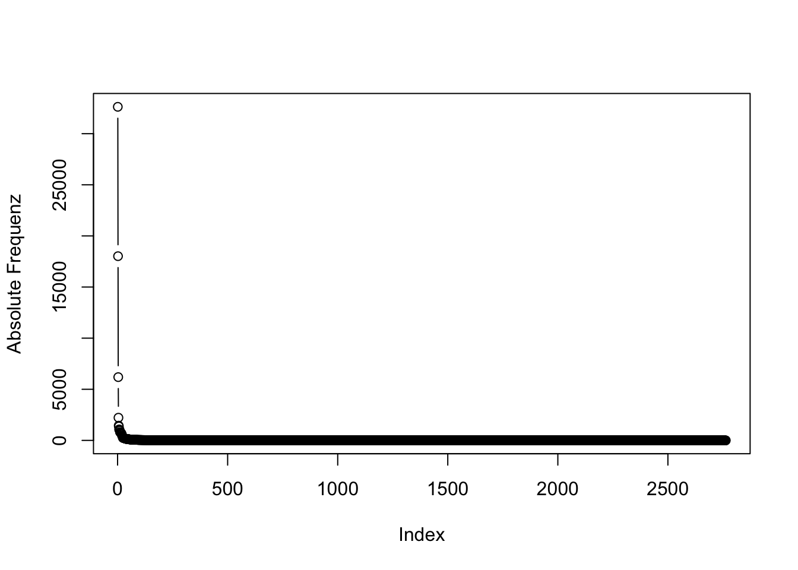

4 Morphologische Produktivität live: Ein Blick auf die Bestimmungsglieder
In diesem Abschnitt wollen wir uns nun einen ganz anderen Weg anschauen, auf dem wir uns den Daten nähern können. Hierfür arbeiten wir mit R - falls Sie sich hier einarbeiten wollen, finden Sie online extrem viele gute Tutorials, und es gibt auch viele Einführungen in die Statistik speziell für Linguist*innen, die mit R arbeiten. Hier kann ich nicht in R einführen, versuche aber, das, was ich mache, so verständlich zu beschreiben, dass Sie zumindest das Konzept hinter dem, was ich mache, verstehen können.
Zunächst lade ich einige Zusatzpakete, die ich im Folgenden benutzen möchte. Sie enthalten Funktionen, die in R nicht standardmäßig enthalten sind. Wenn Sie die Pakete noch nicht installiert haben, müssen Sie siejedes einzelne zunächst mit install.packages("Paketname") installieren. Das gilt für diejenigen, die über das “Comprehensive R Architecture Network” (CRAN) verfügbar sind. Bei einem der Pakete, “collostructions”, ist dies nicht der Fall, Sie finden es unter www.sfla.ch.
## ── Attaching packages ───────────────────────────────────────── tidyverse 1.2.1 ──## ✓ ggplot2 3.2.1 ✓ purrr 0.3.4
## ✓ tibble 3.0.0 ✓ dplyr 0.8.5
## ✓ tidyr 1.0.0 ✓ stringr 1.4.0
## ✓ readr 1.3.1 ✓ forcats 0.4.0## Warning: package 'tibble' was built under R version 3.6.2## Warning: package 'purrr' was built under R version 3.6.2## ── Conflicts ──────────────────────────────────────────── tidyverse_conflicts() ──
## x dplyr::filter() masks stats::filter()
## x dplyr::lag() masks stats::lag()## Creating a generic function for 'toJSON' from package 'jsonlite' in package 'googleVis'##
## Welcome to googleVis version 0.6.4
##
## Please read Google's Terms of Use
## before you start using the package:
## https://developers.google.com/terms/
##
## Note, the plot method of googleVis will by default use
## the standard browser to display its output.
##
## See the googleVis package vignettes for more details,
## or visit https://github.com/mages/googleVis.
##
## To suppress this message use:
## suppressPackageStartupMessages(library(googleVis))##
## Attaching package: 'lubridate'## The following object is masked from 'package:base':
##
## dateZunächst lesen wir die Daten ein, werfen einen Blick auf die Struktur der Daten und schauen uns diese mit Hilfe des str()-Befehls genauer an.
## Parsed with column specification:
## cols(
## Freq = col_double(),
## word = col_character(),
## date = col_date(format = "")
## )## # A tibble: 14,682 x 3
## Freq word date
## <dbl> <chr> <date>
## 1 1 Corona 2020-03-04
## 2 1 Corona* 2020-04-01
## 3 1 Corona* 2020-04-03
## 4 1 Corona* 2020-04-08
## 5 1 Corona* 2020-04-09
## 6 1 Corona* 2020-04-13
## 7 1 Corona* 2020-04-18
## 8 1 Corona* 2020-05-08
## 9 1 Corona* 2020-05-18
## 10 1 Corona* 2020-05-22
## # … with 14,672 more rows## tibble [14,682 × 3] (S3: spec_tbl_df/tbl_df/tbl/data.frame)
## $ Freq: num [1:14682] 1 1 1 1 1 1 1 1 1 1 ...
## $ word: chr [1:14682] "Corona" "Corona*" "Corona*" "Corona*" ...
## $ date: Date[1:14682], format: "2020-03-04" "2020-04-01" ...
## - attr(*, "spec")=
## .. cols(
## .. Freq = col_double(),
## .. word = col_character(),
## .. date = col_date(format = "")
## .. )Nun löschen wir alle Datenpunkte, in denen “Corona” nicht von mindestens zwei weiteren Zeichen gefolgt wird, um Fehltreffer wie Corona- zu tilgen. Dann konvertieren wir alle Daten in Kleinschreibung und fügen eine Spalte hinzu, die nur die Zweitglieder enthält (also alles, was auf Corona- folgt). Aus dieser Spalte löschen wir zusätzlich noch alle Interpunktionszeichen, um z.B. Fälle der Kompositaschreibung mit und ohne Bindestrich zu vereinheitlichen.
# Fehltreffer reduzieren
d <- d[-which(sapply(1:nrow(d), function(i) nchar(d$word[i]))<=8),]
# Groß- und Kleinschreibung ignorieren
d$word <- tolower(d$word)
# Köpfe
d$head <- gsub("corona-?", "", d$word)
# Interpunktion löschen
d$head <- gsub("[[:punct:]]", "", d$head)Wir fassen die Daten nun mit der summarise-Funktion aus dem dplyr-Paket (Teil des “Tidyverse”) zusammen, um die Gesamtfrequenzen jedes Bestimmungsglieds zu bekommen, und ordnen die Daten absteigend nach Frequenz. Das Ganze speichern wir in einen eigene Dataframe, den wir corona_tbl nennen.
Wir möchten nun wissen, welche Lexeme überzufällig häufig als Bestimmungsglieder in Corona-Komposita auftreten. Dafür brauchen wir zunächst ein Referenzkorpus. Hierfür habe ich eine Frequenzliste aller als Nomen getaggten Tokens aus dem DWDS-Kernkorpus des 21. Jahrhunderts erstellt (wiederum mit Dstar), die wir nun einlesen. Wiederum konvertieren wir alle Daten in Kleinschreibung und zählen die Frequenz entsprechend aus:
# einlesen
nouns <- read_delim("allnouns_dwds21.txt",
delim = "\t", quote="",
col_names = c("Freq_dwds21", "word"))## Parsed with column specification:
## cols(
## Freq_dwds21 = col_double(),
## word = col_character()
## )# alle in Kleinschreibung
nouns$word <- tolower(nouns$word)
# neu auszählen (um groß- und kleingeschriebene Varianten zu vereinen)
nouns <- nouns %>% group_by(word) %>% summarise(
Freq_dwds21 = sum(Freq_dwds21)
)Nun verbinden wir mit Hilfe der left_join-Funktion die oben erstellte corona_tbl-Tabelle mit der soeben erstellten nouns-Tabelle. Da nicht alle Lexeme, die in der Corona-Tabelle belegt sind, auch in der DWDS21-Tabelle belegt sind, gibt es einige fehlende Datenpunkte (in R heißen diese NA, für “Not Available”). Diese ersetzen wir mit Hilfe des replace_na-Befehls durch 0.
corona_tbl <- left_join(corona_tbl, nouns, by = c("head" = "word"))
corona_tbl <- replace_na(corona_tbl, list(Freq_dwds21 = 0))Mit Hilfe der Funktion collex.dist aus dem collostructions-Paket können wir nun eine sog. distinktive Kollexemanalyse über die Daten laufen lassen. Wenn Sie mehr über dieses Verfahren lesen möchten, können Sie z.B. das Paper von Gries & Stefanowitsch (2004) oder den Überblicksartikel zur Kollostruktionsanalyse von Stefanowitsch (2013) lesen. Beachten Sie aber bitte, dass ich dieses Verfahren hier überhaupt nicht im Sinne der Erfinder verwende, sondern lediglich explorativ auf Datensätze anwende. Wenn Sie mehr darüber erfahren möchten, welche text- und diskurslinguistischen Aufschlüsse solche Assoziationsmuster erlauben, empfehle ich Bubenhofer (2009) oder auch viele der Blogeinträge, die über Bubenhofers Website verfügbar sind (https://www.bubenhofer.com/).
Wir führen nun die Kollostruktionsanalyse durch und schauen uns die ersten paar Einträge an, die uns der head-Befehl zeigt:
## COLLEX O.CXN1 E.CXN1 O.CXN2 E.CXN2 ASSOC COLL.STR.LOGL SIGNIF SHARED
## 1 virus 32628 6623.4 237 26241.6 Freq 112753.565 ***** Y
## 2 krise 18019 3715.5 417 14720.5 Freq 56986.655 ***** Y
## 3 pandemie 6188 1247.1 0 4940.9 Freq 20168.335 ***** N
## 4 viruspandemie 2221 447.6 0 1773.4 Freq 7158.780 ***** N
## 5 infektion 1362 281.5 35 1115.5 Freq 4067.988 ***** Y
## 6 viruskrise 1076 216.9 0 859.1 Freq 3457.251 ***** NErwartungsgemäß führen -virus und -krise die Rangliste an.
Nun wollen wir aber mit diesen Daten noch mehr machen und einen Plot erstellen, in dem wir sowohl die Frequenz als auch die Assoziationsstärke sehen. Dafür ist es sinnvoll, diese Daten zunächst zu transformieren. Gerade bei Frequenzdaten ist es üblich, sie zu logarithmieren, da Wortfrequenzen oft einer sehr schiefen Verteilung folgen, wie wir auch an diesen Daten sehen können:

Einige wenige Tokens sind extremst häufig, viele sehr selten und die allermeisten Hapaxe, haben also eine Frequenz von 1. Anders sieht es aus, wenn wir die Daten logarithmieren:

Die Verteilung ist nun schon deutlich weniger schief.
Um die Entstehung neuer Wörter über die Zeit hinweg visualisieren zu können, müssen wir aber zunächst die Assoziationswerte dem ursprünglichen Dataframe, der ja auch die Datumswerte hat, hinzufügen, was wir wieder über den left_join-Befehl tun. Anschließend tabulieren wir die Daten so, dass wir für jedes Datum die Frequenz bekommen.
d <- left_join(d, corona_coll, by = c("head" = "COLLEX"), all.x = T)
d$LogFreq_per_date <- log(d$Freq)
# tabulieren:
d2 <- d %>% group_by(head, date) %>% summarise(
Freq = sum(Freq),
Freq_in_entire_dataset = unique(O.CXN1)
)Um die Datenmenge handhabbar zu halten, beschränken wir uns zudem auf solche Daten, deren absolute Frequenz in den Daten mindestens fünf beträgt und die im Jahr 2020 erhoben wurden. Dafür fügen wir zunächst noch eine Jahr-Spalte an.
# Jahr-Spalte
d2$year <- gsub("-.*", "", d2$date)
# nur 2020
d2 <- filter(d2, year == "2020")
# Frequenz > 5
d2 <- filter(d2, Freq_in_entire_dataset >= 5)Um die Daten als Input für Googlevis benutzen zu können, müssen wir sie aber zunächst noch in ein anderes, tabellarisches Format bringen.
# tabellarisches Format
d2_tbl <- d2 %>% select(head, date) %>% table %>% as.data.frame(stringsAsFactors = F)
d2_tbl$date <- d2_tbl$date %>% as_date()
colnames(d2_tbl) <- c("head", "date", "Freq_on_date")
d2_tbl2 <- left_join(d2_tbl, d2, by = c("head", "date"))
d2_tbl3 <- replace_na(d2_tbl2, list(Freq = 0, logFreq = 0, diff_rel = 0))
# mit Kollexemtabelle vereinigen
d2_tbl4 <- left_join(d2_tbl3, corona_coll, by = c("head" = "COLLEX"))Im Falle der hier vorliegenden Daten macht es auch bei den Log-Likelihood-Werten, die in unserer Kollostruktionstabelle als Assoziationsmaß verwendet werden, Sinn, sie zu logarithmieren, weil man sonst in unserer Grafik wenig erkennen würde. Das ist aber wirklich nur in diesem speziellen Fall zwecks Visualisierung sinnvoll und in den meisten Fällen unnötig. Darüber hinaus nehme ich noch eine weitere Veränderung vor: Der Log-Likelihood-Wert geht in zwei Richtungen - einige haben einen hohen LogL-Wert, weil sie überzufällig häufig als Bestimmungsglieder von Komposita im Coronakorpus vorkommen, andere haben einen hohen LogL-Wert, weil sie überzufällig häufig als freie Lexeme im DWDS-Kernkorpus 21 vorkommen! Die ASSOC-Spalte im collex.dist-Output gibt an, in welche Richtung die Assoziation jeweils geht. Mit Hilfe dieser Spalte negativiere ich alle Werte, die in Richtung DWDS21 gehen. So können wir dann in unserer Visualisierung auf Anhieb sehen, in welche Richtung die Assoziation geht.
# Frequenz logarithmieren
d2_tbl4$logFreq <- log(d2_tbl4$Freq_on_date)
# Kollexemstärke logarithmieren
d2_tbl4$collex <- ifelse(d2_tbl4$ASSOC=="Freq_dwds21", -d2_tbl4$COLL.STR.LOGL, d2_tbl4$COLL.STR.LOGL)
d2_tbl4$collex2 <- ifelse(d2_tbl4$ASSOC=="Freq_dwds21", -log1p(d2_tbl4$COLL.STR.LOGL), log1p(d2_tbl4$COLL.STR.LOGL))# GoogleMotionChart erstellen...
bubble <- gvisMotionChart(filter(select(d2_tbl4, head, date, logFreq, COLL.STR.LOGL, collex, collex2), logFreq > 0),
idvar = "head",
sizevar = "logFreq",
yvar="logFreq",
xvar="collex2",
timevar = "date")
# ... und mit dem Plot-Befehl aktivieren
plot(bubble)## starting httpd help server ... doneEt voilà - wenn Sie es schaffen, den FlashPlayer zu aktivieren, können Sie jetzt ein wenig mit den Daten herumspielen.
Statt eines Schlussworts eher eine Zwischenbilanz: Ich hoffe, Sie konnten das eine oder andere aus diesem Tutorial lernen, auch wenn es noch work-in-progress ist und gerade diese dritte Seite noch etwas Feinschliff bedürfte. Ich hoffe, dass ich diesen Feinschliff bald ergänzen kann…